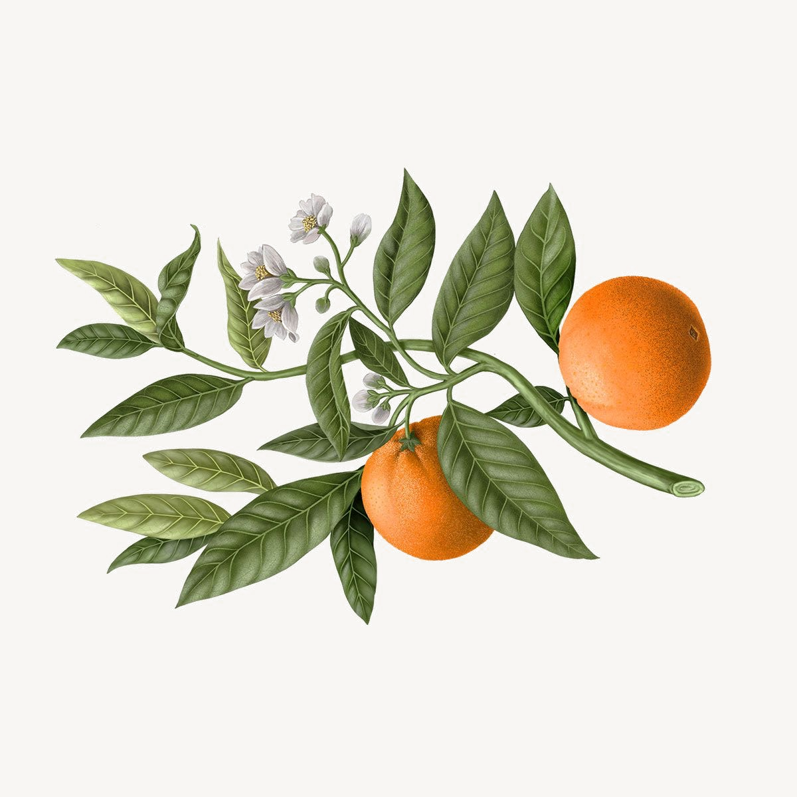
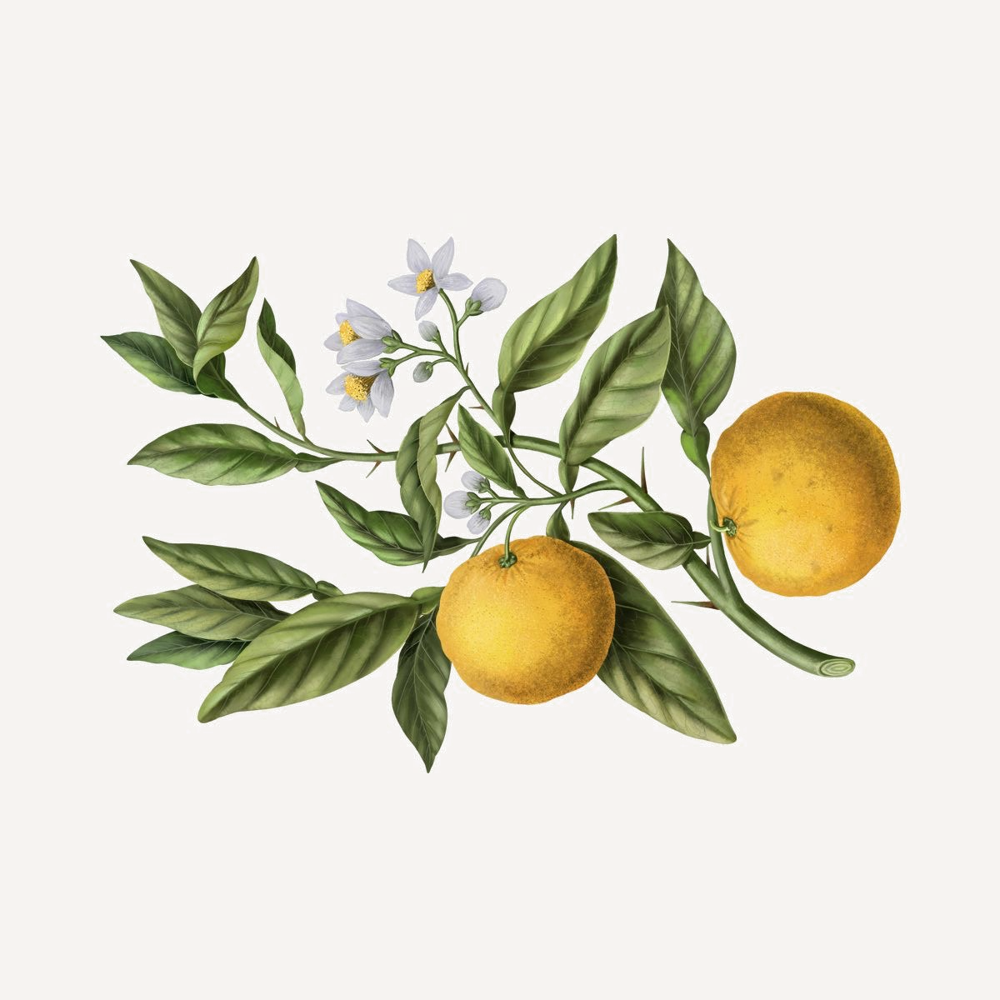
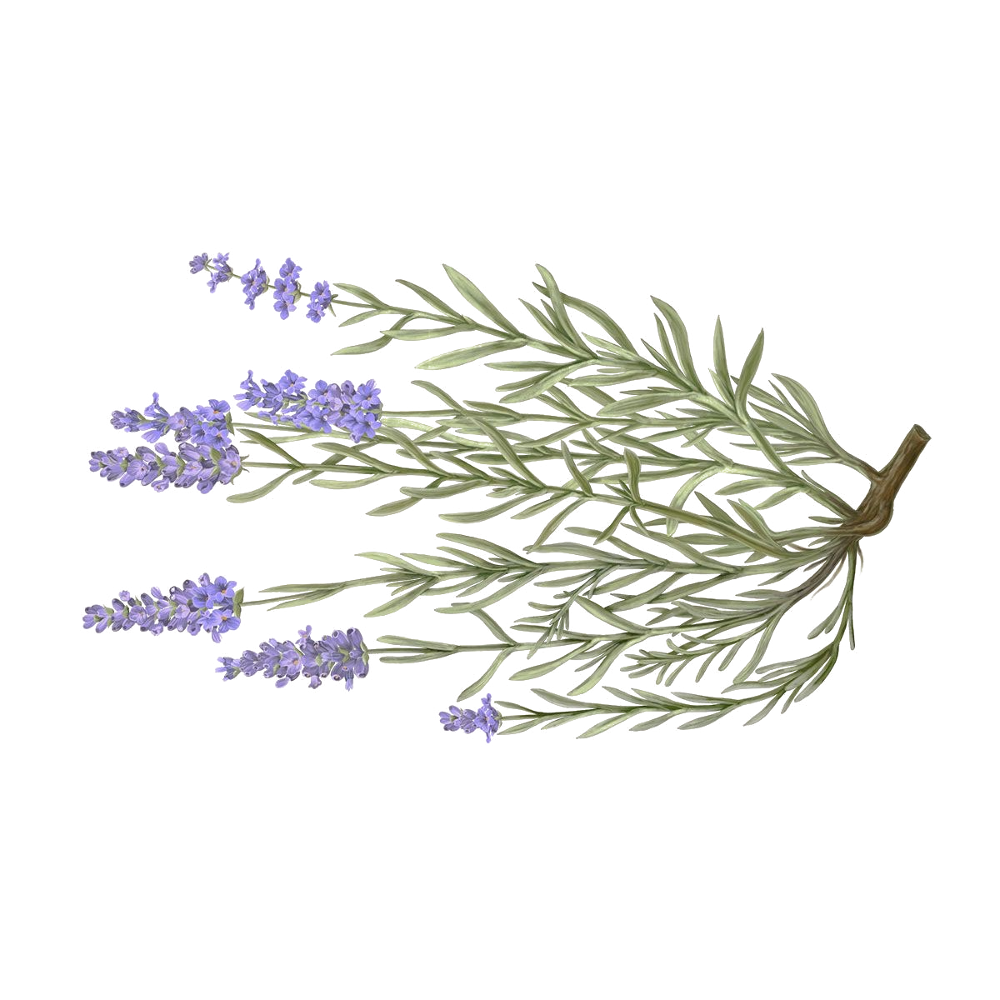

Observations


Places, light, and things that caught my attention.
graphs, language models, and the occasional painting
Hello from New York. I like building things, looking at paintings, and reading books I'll never finish. I studied computer science, spent time in computer vision research, and ended up working on AI and security at Amazon Web Services, where I think about graphs, language models, and how to make cloud security less noisy.
Outside of work I build whatever catches my attention. Lately that's been an AI wardrobe app, a tool that harvests art from museum APIs, and a blog I write when something is worth writing about. I've been studying French for a few years now, and I read less than I probably should.

Security Analytics & AI Research, GuardDuty
Data Management Technology
M.S. Computer Science
Computer Vision & HCI · 2017
B.Tech (Hons.) Computer Science
First Division with Honors · 2016

Prompt compression and token cost optimizer for LLM APIs. Multi-pass entropy scoring, TF-IDF pruning, response caching, and model routing.
Metric interceptor and job watchdog for Spark. Collects query plans, tracks disk spill and shuffle, kills resource-hogging jobs.
Builds graphs from SLIC superpixels for CRF-based image segmentation. Published on PyPI. Born out of cell segmentation research at Stony Brook.
Automated essay scoring using RNNs and feature engineering. Semantic analysis, clause parsing, discourse flow.
Synthetic Minority Over-sampling Technique implemented for SparkML. Handles class imbalance in large-scale distributed datasets.
Harvests openly licensed artwork from the Louvre, the Met, the Art Institute of Chicago, and the Rijksmuseum.
A language-learning app with a dark, editorial aesthetic. Share text from anywhere, extract vocabulary, quiz yourself.
An AI wardrobe app. Scan your clothes, get AI descriptions, generate outfits. Minimal interface, editorial sensibility.
An RNA world simulator. Nucleotides bond, pair, and form compounds in a procedurally generated biome.
Serialize Spark DataFrames to and from Avro. A bridge between two serialization worlds.
Daily French exercises delivered to your inbox. Translation drills, vocabulary, text extracts. Runs on Lambda for essentially $0.
Few-shot in-context learning for classifying malicious HTTP traffic. Fine-tunes BERT on packet captures from CTU-13 and WRCCDC datasets.
Node classification, link prediction, and graph clustering with GNNs. GAT, GraphSAGE, and heterogeneous attention on CORA and ogbn-arxiv.
A partial list. Always looking for recommendations.

Notes on scent, memory, and the small rituals of wearing something well. Bilingual reviews of fragrances encountered in shops, on skin, and sometimes only in passing. Written in French and English, because some things lose themselves in translation.
Places, light, and things that caught my attention.
US Patent No. 12,418,558 B1 · 2025
CVMI, IEEE CVPR Workshop · 2017
International Journal of Scientific & Research Publications · 2015